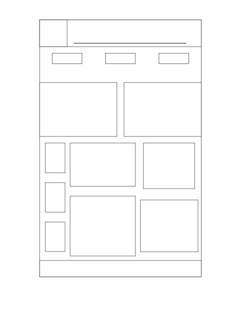
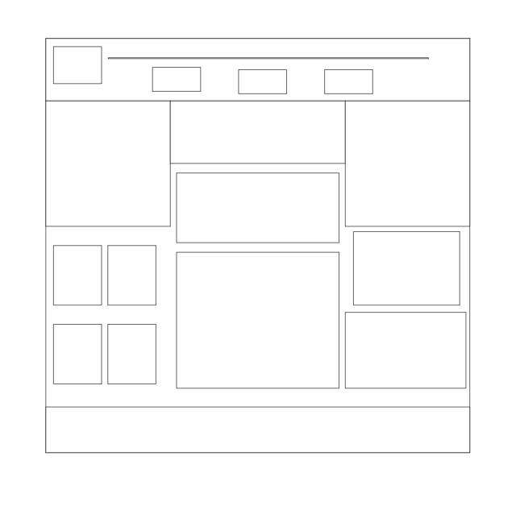

Site Name
My Music World reflects my passion for music and invites others to explore and learn Guitar.
Site Purpose
This website aims to share my love for music and offer resources for music lovers, including information on genres, artists, and tips for learning guitar.
Scenarios
- What types of music should I explore for relaxation?
- How can I start Learning guitar?
Color Schema
Primary Color: Deep Purple (#5E35B1) - Used for headings and buttons.
Secondary Color: Soft Pink (#F8BBD0) - Used for background and body text.
Typography
Heading Font: Lora - Used for headings.
Body Font: Open Sans - Used for general content.
Wireframe
Sketch of the layout for both mobile and desktop views.

Mobile View

Desktop View